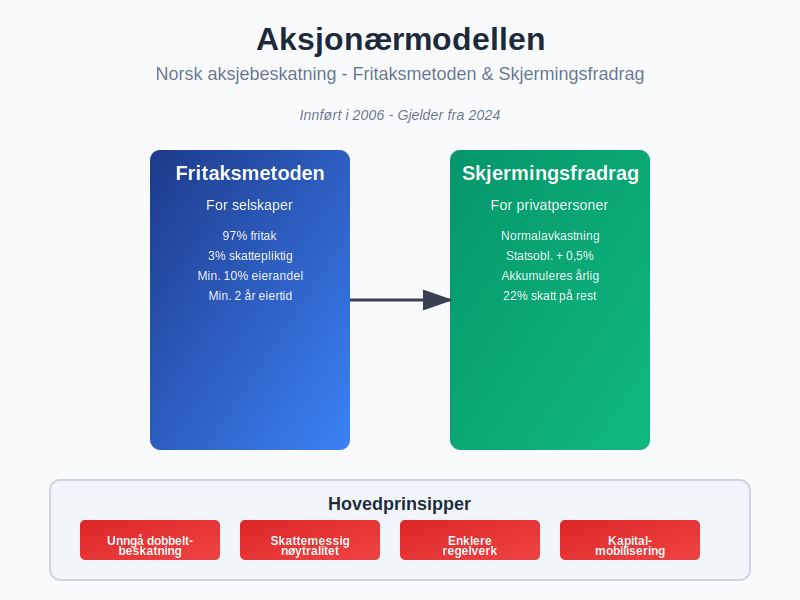
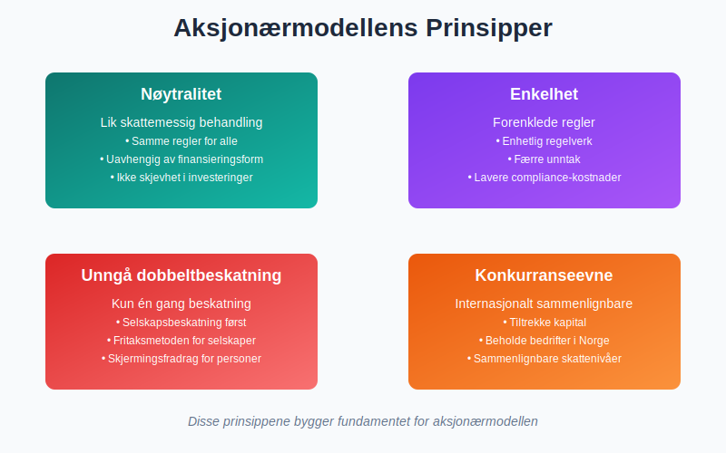
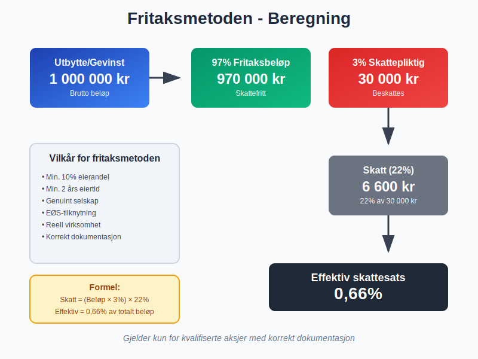
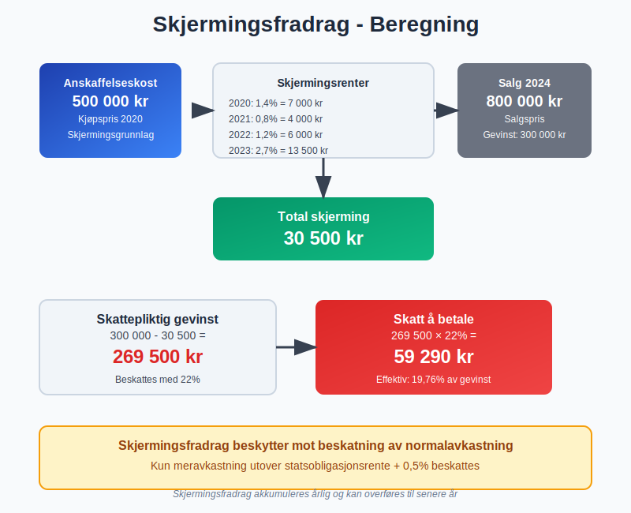
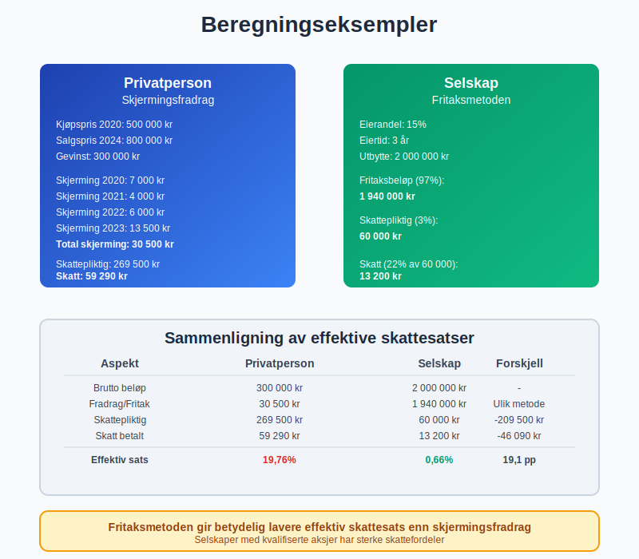
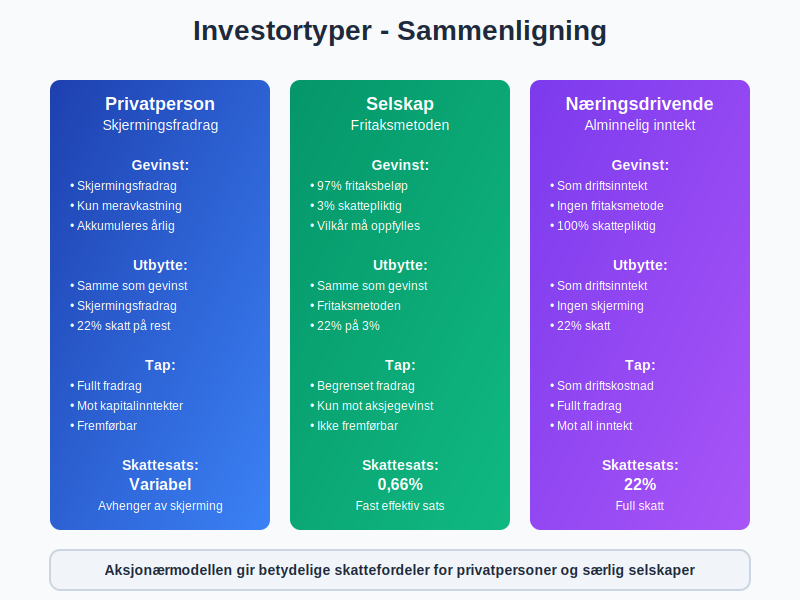
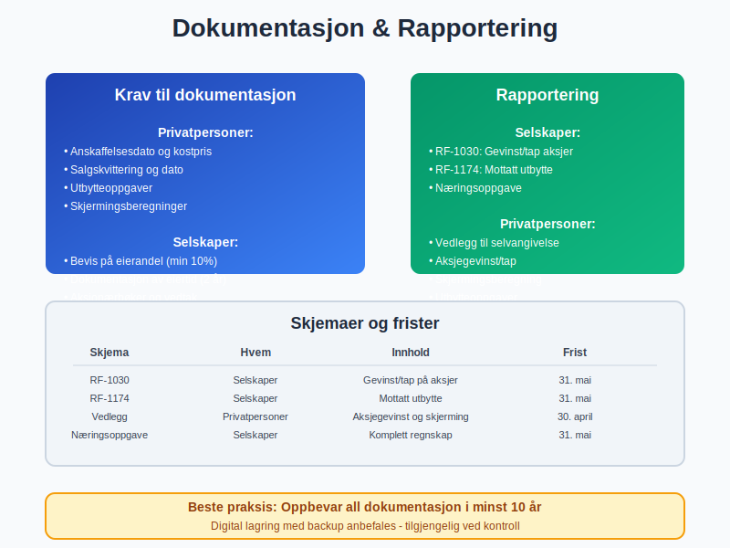
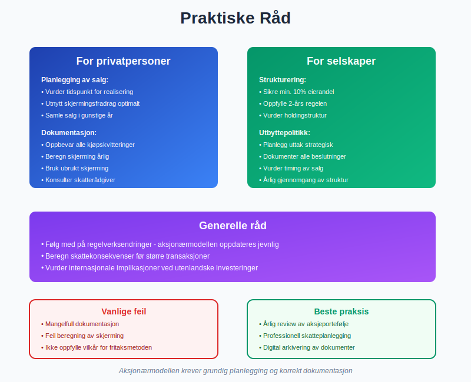

Aksjonærmodellen er det sentrale skattesystemet for aksjebeskatning i Norge, innført i 2006 for å skape et enhetlig og nøytralt system for beskatning av aksjer og utbytte. Modellen bygger på to hovedprinsipper: fritaksmetoden og skjermingsfradrag, som sammen skal sikre at aksjonærer ikke blir dobbeltbeskattet.
For en grundig innføring i beskatning av aksjegevinster for både privatpersoner og selskaper, se Skatt på aksjegevinst.

Historisk bakgrunn og formål
Aksjonærmodellen ble innført som del av skattereformen 2006 for å løse problemet med dobbeltbeskatning av aksjegevinster og utbytte. Før 2006 eksisterte det parallelle systemer som skapte ulik behandling mellom forskjellige investortyper.
Hovedmålsettinger
- Nøytralitet: Lik skattemessig behandling uavhengig av finansieringsform
- Enkelhet: Enhetlige regler for alle aksjonærtyper
- Likviditet: Sikre at norske bedrifter får tilgang til kapital
- Internasjonal konkurranseevne: Sammenlignbare vilkår med andre land

Fritaksmetoden - Grunnpilaren i systemet
Fritaksmetoden er den første søylen i aksjonærmodellen og gjelder for selskaper som eier aksjer. Metoden innebærer at gevinster og utbytte fra kvalifiserte aksjer i hovedsak er skattefrie.
Vilkår for fritaksmetoden
| Vilkår | Beskrivelse | Detaljer |
|---|---|---|
| Eierandel | Minimum 10% av aksjekapitalen eller stemmerettene | Må opprettholdes i minst 2 år |
| Eiertid | Kontinuerlig eierskap i minimum 2 år | Gjelder både før og etter salg |
| Genuint selskap | Selskapet må drive reell virksomhet | Ikke bare passiv kapitalforvaltning |
| EØS-tilknytning | Selskapet må være hjemmehørende i EØS | Eller i land med skatteavtale |
Beregning av fritaksmetoden
Fritaksmetoden gir 97% fritak for gevinster og utbytte, mens 3% beskattes som alminnelig inntekt med 22% skattesats.
Eksempel på beregning:
Utbytte mottatt: 1 000 000 kr
Fritaksbeløp (97%): 970 000 kr
Skattepliktig beløp (3%): 30 000 kr
Skatt (22% av 30 000): 6 600 kr
Effektiv skattesats: 0,66%

Skjermingsfradrag - Beskyttelse for privatpersoner
Skjermingsfradrag er den andre søylen i aksjonærmodellen og gjelder for privatpersoner som eier aksjer. Fradraget skal sikre at kun den delen av gevinsten som overstiger en “normalavkastning” beskattes.
Beregning av skjermingsfradrag
Skjermingsfradraget beregnes som: Skjermingsgrunnlag × Skjermingsrente
| Komponent | Formel | Beskrivelse |
|---|---|---|
| Skjermingsgrunnlag | Inngangsverdi + tilleggsinvesteringer | Justert for uttak og utbytte |
| Skjermingsrente | Statsobligasjonsrente + 0,5% | Oppdateres årlig av Skatteetaten |
| Akkumulering | Ubrukt skjerming overføres | Kan brukes i senere år |
Skjermingsrenter historisk
| År | Skjermingsrente | Statsobligasjonsrente | Tillegg |
|---|---|---|---|
| 2024 | 2,8% | 2,3% | 0,5% |
| 2023 | 2,7% | 2,2% | 0,5% |
| 2022 | 1,2% | 0,7% | 0,5% |
| 2021 | 0,8% | 0,3% | 0,5% |
| 2020 | 1,4% | 0,9% | 0,5% |

Praktiske beregningseksempler
Eksempel 1: Privatperson med aksjegevinst
En privatperson kjøpte aksjer for 500 000 kr i 2020 og selger dem for 800 000 kr i 2024.
Beregning:
Salgssum: 800 000 kr
Inngangsverdi: 500 000 kr
Gevinst: 300 000 kr
Skjerming 2020: 500 000 × 1,4% = 7 000 kr
Skjerming 2021: 500 000 × 0,8% = 4 000 kr
Skjerming 2022: 500 000 × 1,2% = 6 000 kr
Skjerming 2023: 500 000 × 2,7% = 13 500 kr
Total skjerming: 30 500 kr
Skattepliktig gevinst: 300 000 - 30 500 = 269 500 kr
Skatt (22%): 269 500 × 0,22 = 59 290 kr
Eksempel 2: Selskap med utbytte
Et aksjeselskap eier 15% av aksjene i et annet selskap og mottar 2 000 000 kr i utbytte.
Beregning med fritaksmetoden:
Utbytte mottatt: 2 000 000 kr
Fritaksbeløp (97%): 1 940 000 kr
Skattepliktig beløp (3%): 60 000 kr
Skatt (22% av 60 000): 13 200 kr
Effektiv skattesats: 0,66%

Forskjeller mellom investortyper
Privatpersoner
| Aspekt | Regel | Konsekvens |
|---|---|---|
| Gevinst | Skjermingsfradrag | Kun meravkastning beskattes |
| Utbytte | Skjermingsfradrag | Beskyttelse mot normalavkastning |
| Tap | Fullt fradrag | Kan trekkes fra andre kapitalinntekter |
| Skattesats | 22% | Alminnelig inntekt |
Selskaper
| Aspekt | Regel | Konsekvens |
|---|---|---|
| Gevinst | Fritaksmetoden | 97% fritak ved kvalifiserte aksjer |
| Utbytte | Fritaksmetoden | Samme behandling som gevinst |
| Tap | Begrenset fradrag | Kun mot gevinst på aksjer |
| Skattesats | 22% på 3% | Effektiv sats 0,66% |

Spesielle situasjoner og unntak
Næringsdrivende med aksjer
For næringsdrivende som handler aksjer som del av virksomheten, gjelder ikke aksjonærmodellen. Gevinster og tap behandles som driftsinntekter og driftskostnader.
Utenlandske investorer
Utenlandske investorer som ikke er skattepliktige til Norge, har generelt begrenset skatteplikt på norske aksjer. Skatteavtaler kan redusere eller eliminere skatten.
Ansatte aksjer og opsjoner
Ansatte som får aksjer eller opsjoner som del av lønn, må regne fordelen som lønnsinntekt ved tildelingen.
Dokumentasjon og rapportering
Krav til dokumentasjon
For å benytte aksjonærmodellen korrekt, må bedrifter og privatpersoner dokumentere:
- Anskaffelsestidspunkt og kostpris
- Eierandel og eiertid
- Utbytte og gevinster
- Skjermingsberegninger (privatpersoner)
Rapportering i selvangivelsen
| Skjema | Hvem | Innhold |
|---|---|---|
| RF-1030 | Selskaper | Gevinst/tap på aksjer |
| RF-1174 | Selskaper | Mottatt utbytte |
| Vedlegg | Privatpersoner | Aksjegevinst og skjerming |

Internasjonale aspekter
Skatteavtaler og dobbeltbeskatning
Norge har skatteavtaler med over 80 land som regulerer beskatning av aksjegevinster og utbytte. Disse kan påvirke anvendelsen av aksjonærmodellen.
FATCA og CRS
Norske finansinstitusjoner må rapportere om utenlandske kontoinnehavere under FATCA og CRS-regelverket, som kan påvirke aksjonærer.
Framtidige endringer og utvikling
Foreslåtte endringer
Regjeringen har signalisert flere mulige endringer i aksjonærmodellen:
- Økt skattesats på den skattepliktige delen
- Redusert fritaksandel i fritaksmetoden
- Strengere vilkår for kvalifiserte aksjer
- Nye regler for holdingselskaper
Europeiske harmoniseringskrav
EU arbeider med å harmonisere selskapsbeskatning, som kan påvirke norske regler om aksjebeskatning i årene framover.
Praktiske råd og beste praksis
For privatpersoner
- Planlegg salg for å utnytte skjermingsfradrag optimalt
- Dokumenter alle aksjekjøp og -salg nøye
- Vurder tidspunkt for realisering av gevinster
- Bruk ubrukt skjerming fra tidligere år
For selskaper
- Sikre at vilkårene for fritaksmetoden oppfylles
- Dokumenter eierandel og eiertid
- Vurder struktur av aksjeoppgave og investeringer
- Planlegg utbyttepolitikk strategisk

Sammenheng med andre skatteregler
Forholdet til andre kapitalskatter
Aksjonærmodellen må sees i sammenheng med:
- Eiendomsskatt på fast eiendom
- Formuesskatt (hvis gjeninnført)
- Arveavgift ved generasjonsskifte
Påvirkning på bedrifters finansieringsbeslutninger
Aksjonærmodellen påvirker hvordan bedrifter velger mellom:
- Egenkapital vs. gjeld
- Utbytte vs. tilbakekjøp av aksjer
- Opparbeidet vs. tilført egenkapital
Utfordringer og kritikk
Kompleksitet
Til tross for målsettingen om enkelhet, oppleves aksjonærmodellen som kompleks, spesielt:
- Skjermingsberegninger for privatpersoner
- Vilkår for fritaksmetoden
- Grensetilfeller og tolkningsspørsmål
Ulik behandling
Modellen skaper fortsatt forskjeller mellom:
- Privatpersoner og selskaper
- Kvalifiserte og ikke-kvalifiserte aksjer
- Aktive og passive investorer
Konklusjon
Aksjonærmodellen er et sentralt element i norsk skattepolitikk som balanserer hensynet til kapitalflukt, skatteproveny og nøytralitet. Forståelse av modellens mekanismer er essensielt for både privatpersoner og bedrifter som investerer i aksjer.
Nøkkelpunkter å huske:
- Fritaksmetoden gir 97% fritak for selskaper med kvalifiserte aksjer
- Skjermingsfradrag beskytter privatpersoner mot beskatning av normalavkastning
- Dokumentasjon og korrekt rapportering er avgjørende
- Planlegging kan optimalisere skatteposisjonen betydelig
For å sikre korrekt anvendelse av aksjonærmodellen, anbefales det å konsultere regnskapsfører eller skatterådgiver ved komplekse situasjoner.